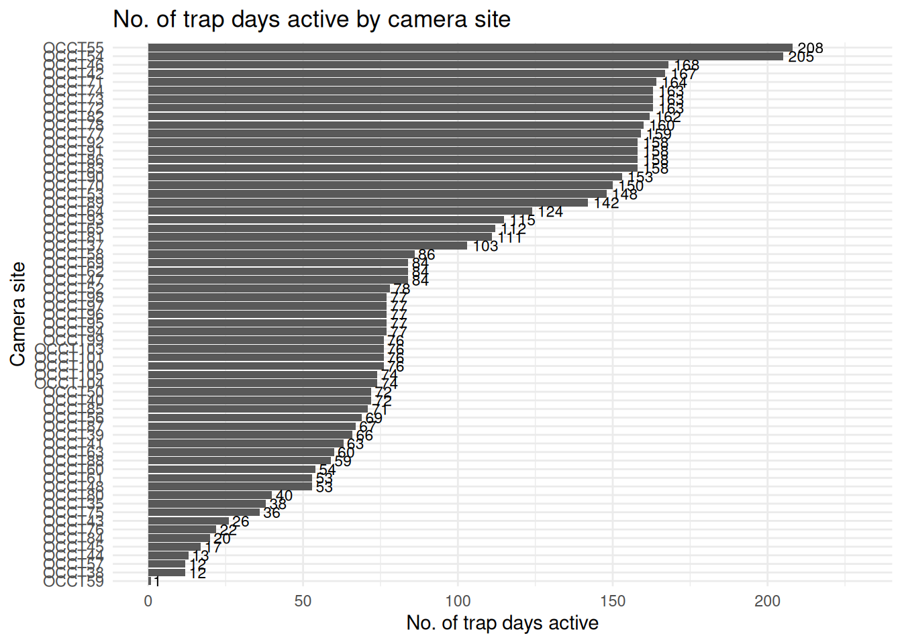
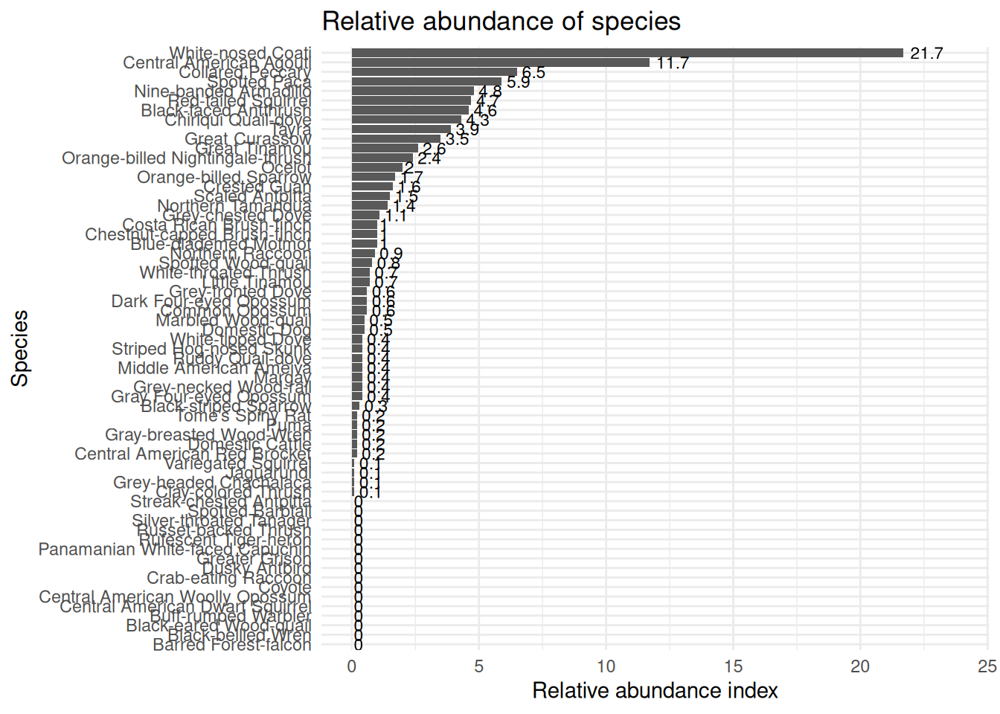
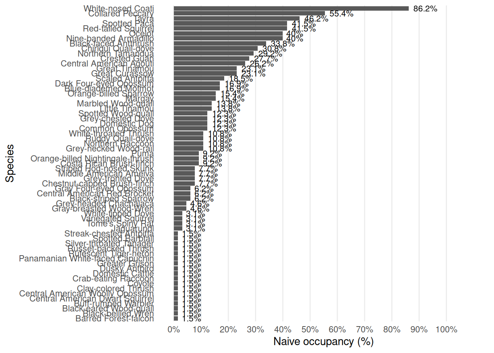
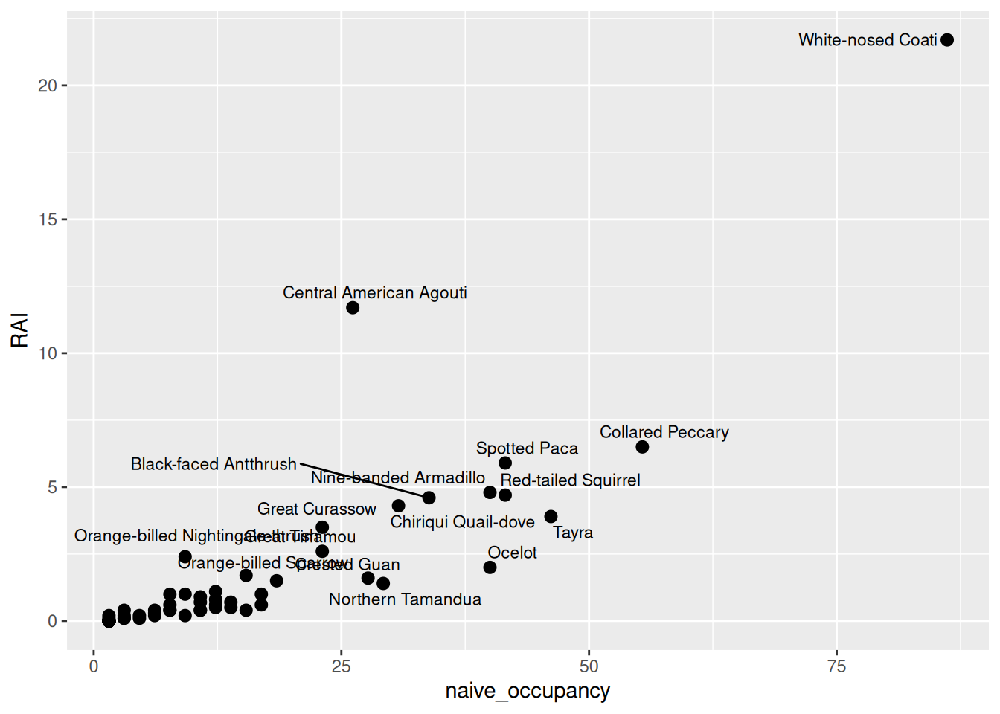

3 Exploration to Fila Costeña
Fila Costeña is a mountain range located parallel to the coast, with steep slopes ending in a narrow plain, and forming part of the Pacific slope of the Cordillera de Talamanca system. Fila Costeña’s complex topography, combined with its relatively recent emergence and subsequent isolation from lowland Pacific forests not only qualifies as a Key Biodiversity Area of international significance (Key Biodiversity Areas Partnership, 2026), but also represents an important stepping stone for wildlife dispersal among the nearest protected areas, make it a critical area for understanding the biodiversity in the Amistosa Biological Corridor.
Entre 2023 y 2026, nuestro equipo visitó [] sitios…
Estas son las figuras de Sabir




Este es el mismo de LTM
Fist take a look of the chronology of the deployments:
Which results in 10227 identifiable wildlife images of 64 species. Including 28 Mammals and 35 Birds.
Now, we going to check the results bases of independent records:
This resulted in 5644 independent detections of wildlife. The total number of detections and proportion of cameras detected at are as follows:
Here goes the full list of species
How is the distribution of Threatened species in our records?
Check the number of records and the occupancy
For the top twenty detected species, the treatment-specific capture rates are as follows: